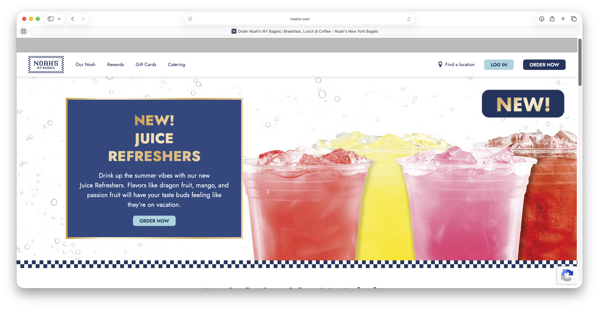
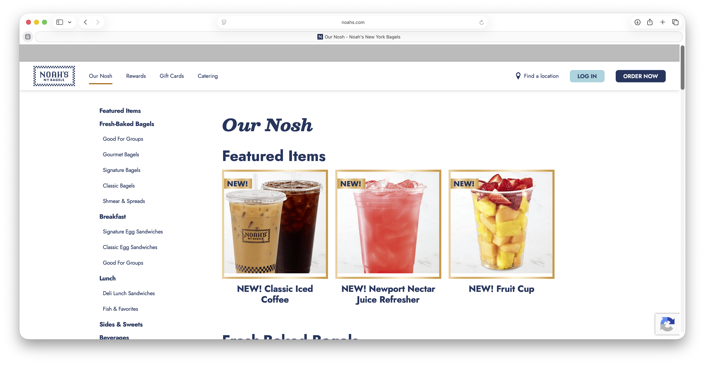
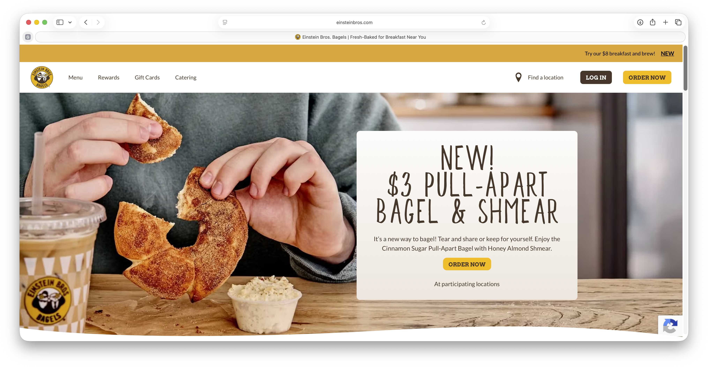
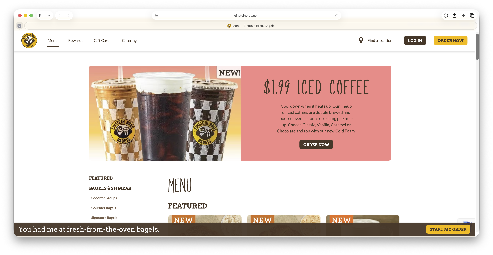
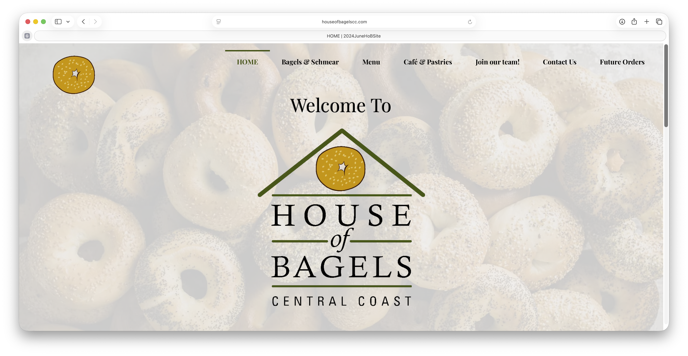
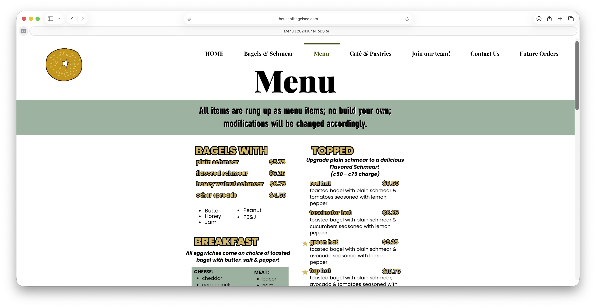

Buckley's Bagel (company, organization, etc.)
Handcrafted, Freshly Baked, Everyday. At Buckley's Bagels we strive to provide quality bagels and delicious beverages for hardworking customers at an affordable price.
The people who use this site are potential customers who are curious about the menu, store locations, and store hours.
Their primary tasks and goals are to learn more about the company, navigate the menu, and access store locations and hours. They should also be able to easily reach a customer service phone number and email.






Welcome to Buckley's Bagels! Founded in 2026, we pride ourselves on providing quality and affordable breakfeast to our hardworking customers. Stop by to enjoy our undeniable classic flavors or exciting new arrivals accompanied by a freshly brewed coffee to start off your morning right.
[Person holding a bagel and coffee in front of the company's storefront]
Buckley's Bagels was created from a deep appreciation and love for the craft of making bagels and a desire to provide afforable food for my hardwoking neighbors. I hope that when you visit one of our beautiful storefronts, you are pleased by the friendly customer service and tasty menu of food
[Candid photo of a team of employees working in a kitchen baking bagels, brewing coffee, and serving customers]
[Image of Maple Almond Bagel]
Our famous Whole Grain bagel toasted with our new Maple Almond cream cheese
[Image of Pumpkin Oat Bagel]
New Pumpkin Oat Bagel toasted with our classic plain cream cheese
[Image of Apple Cinnamon Bagel]
New Apple bagel toasted with our beloved Cinnamon cream cheese
[Image of Pumpkin Spice Mocha]
New Pumpkin Spice Mocha combines freshly brewed espresso, rich milk chocolate, and our new pumpkin spice creamer
[Line up of different unique breakfeast bagel sandwitches with beverages behind them, showing the new menu items available this month]
[Image of Plain Bagel]
Classic plain Buckley's Bagel
[Image of Sesame Bagel]
Classic Buckley's Bagel coated in sesame seeds
[Image of Everything Bagel]
Classic Buckley's Bagel coated in blend of sesame seeds, poppy seeds, minced galric and onion, and salt
[Image of Blueberry Bagel]
Classic Buckley's Bagel baked with blueberrys to add tart and sweetness
[Image of Whole Weat Bagel]
Classic Buckley's Bagel made with whole weat flour to add a hearty flavor
[Image of Asiago Cheese Bagel]
Classic Buckley's Bagel baked with farm to table asaigo cheese
[Image of Cinnamon Raisin Bagel]
Classic Buckley's Bagel baked with rasins and coated in fresh cinnamon to add sweetness
[Image of Coffee]
Locally sourced coffee beans, served hot or iced
[Image of Matcha]
Brewed with quality matcha powder and locally sourced milk, served hot or iced
[Image of Smoothie]
Blended strawberrys, banana, greek yogurt, orange juice, almond butter, protein powder, and oats
[A series of pictures of the menu items]
visit us at
email us at: info@buckleysbagels.com
write us at: 1233 Charmeran Avenue, San Luis Obispo, CA, 92423
903-112-4839
[dog sitting produly in front of storefront]